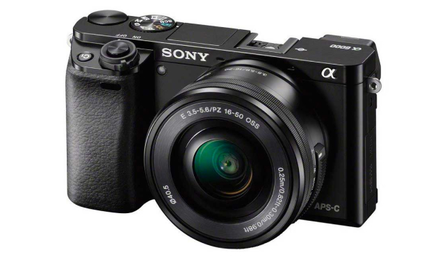
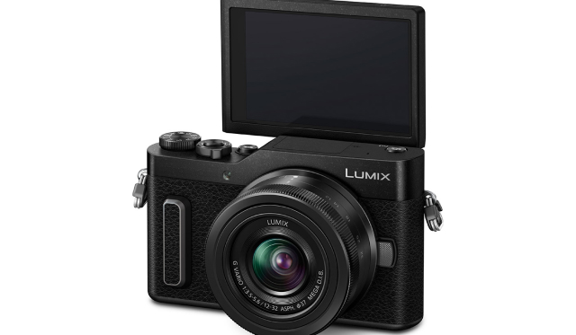

Un appareil photo hybride est un boîtier à grand capteur (4/3, APS-C ou Full Frame), sans miroir pour la visée et à objectifs interchangeables.
À l’origine, c’est en fait un mélange de compact et de reflex – et c’est là tout son intérêt. L’intérêt premier d’un hybride est sa compacité par rapport à un reflex souvent lourd et imposant. Toutefois, certains modèles (essentiellement haut de gamme) ne gagnent pas toujours en légèreté selon l’objectif avec lesquels ils sont couplés. Si cet aspect vous intéresse, il est donc important de le vérifier. Il est cependant (en général) plus gros qu’un compact pour permettre une meilleure préhension et surtout proposer une qualité d’image équivalente (ou supérieure) aux boîtiers reflex grâce au grand capteur.
Le parc optique des hybrides est en fort développement. S’il est encore un peu moins fourni que celui des reflex chez certains constructeurs (comme Canon et Nikon), il est aujourd’hui possible de trouver des optiques extrêmement qualitatives. Certaines marques partagent même leur monture, comme Olympus et Panasonic pour le micro 4/3 avec des optiques très compactes ou encore Panasonic, Leica et Sigma via la « L-Mount Alliance », dévoilée à la Photokina 2018 pour le format 24 x 36 mm. Enfin, moyennant des adaptateurs, vous pouvez monter quasiment tous les objectifs destinés aux reflex sur ces hybrides.
Avec leur double système AF, qui cumule la corrélation de phase (rapide et utile pour les sujets mobiles) à la détection par contraste (précis mais souvent lent), certains boîtiers hybrides disposent d’un autofocus très réactif, parfois même plus efficace que celui des reflex sur les boîtiers hybrides professionnels.
Le viseur électronique (EVF) des hybrides est également en nette progression, avec des améliorations en terme de grossissement (taille perçue dans le viseur) et en dynamique. Si certains photographes ont pu se montrer réticents, cette fonctionnalité a énormément gagné en confort d’utilisation et en précision. Mais surtout, le fait de pouvoir profiter d’un aperçu de l’image finale (telle qu’elle sera enregistrée) permet de photographier de manière sereine, surtout dans des conditions de basse lumière où les viseurs électroniques s’avèrent très lumineux comparativement au système optique.
Le mode vidéo implanté sur les hybrides a également beaucoup progressé ces dernières années, grâce à l’absence de miroir et à des capteurs et processeurs toujours plus rapides. La vidéo en 4K UHD est désormais quasiment obligatoire, et certains modèles proposent de l’enregistrement jusqu’en RAW 8K pour séduire les vidéastes les plus exigeants et faire de l’hybride un boitier deux en un. Couplé à une stabilisation du capteur et à celles de certains objectifs, c’est aujourd’hui un véritable argument marketing.
L’entrée de gamme pour mettre un premier pied dans la photo Sony Alpha 6000, abordable et réactif
Sony A6000
Acheter au meilleur prix  Acheter au meilleur prix